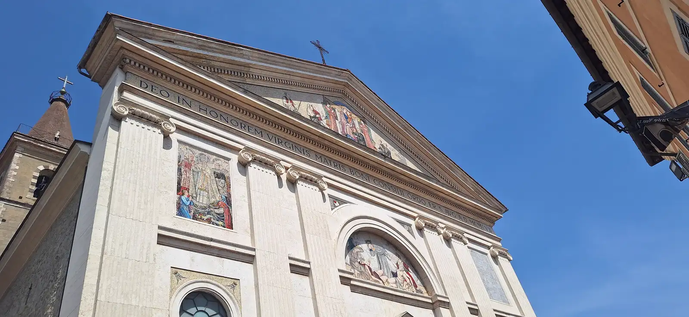
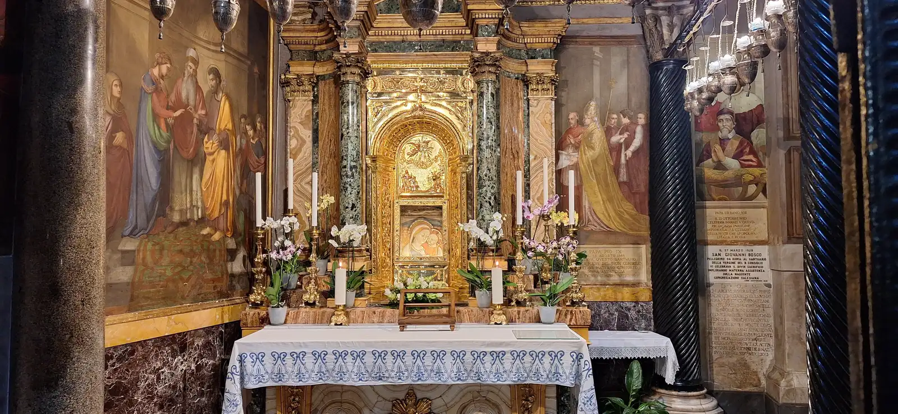
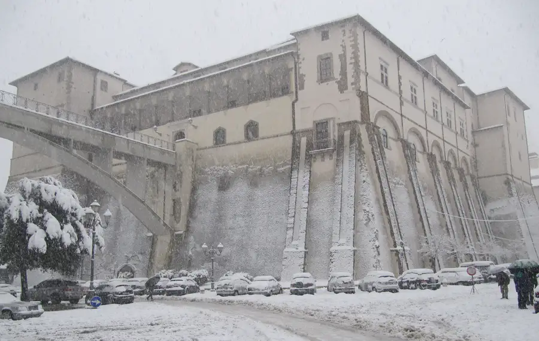

Ordination ofGian Maria
Candelora
Saturday 12 December 2026, 10:30 am
Sanctuary of Saint Mary, Mother of Good Counsel, Genazzano (Rome)


Dear friends, Here is all the information you need to take part in the day in the best possible way.
The schedule
Saturday 12 December 2026
- 10:30 am
- Ordination ceremony in the sanctuary
- About 1:00 pm
- End of the ceremony
- Afterwards
- Time together at Aminta Resort, about ten minutes by car from the sanctuary
Sunday 13 December 2026
- 11:15 am
- Fra Gian Maria celebrates his first Mass in the sanctuary
Where
Genazzano
Please note: Genazzano, not Genzano. They are two different towns.
Parking
Genazzano is a small village and parking is limited. These are the places where you are most likely to find a space. You will probably need to walk a little, and some of the way is uphill.

Parcheggio Madre Teresa di Calcutta
On the big bend before the entrance to the village, about 200 metres away. It holds about 50 cars, counting double parking.
Open in MapsPiazzale della Pace
The main junction of the village. You will recognise it by Colonna Castle and the large bridge above the square.
Open in MapsViale San Vito Romano
If there is no room at Piazzale della Pace, carry straight on and park at the side of the road.
Open in MapsPiazza della Repubblica
A large central area, convenient for reaching the village on foot.
Open in MapsVia Famiglia Morelli Giacomo, 7
Open in MapsVia Scipione Vannutelli, Via Antonio Gramsci, Via Giuseppe Garibaldi
Streets close to the centre: you can park along these side streets.
Open in Maps
We have spoken to the local police. Given the number of guests, we asked them to help direct the traffic and, above all, to be lenient.
Reception
The ceremony begins at 10:30 am and ends at about 1:00 pm. Afterwards we will spend some time together at the Aminta Resort restaurant, about ten minutes by car from the sanctuary.
Aminta Resort, Via Trovano, 5, GenazzanoWhere to stay
If you need to stay overnight, these are the most convenient places.
-
Hotel Cremona
Via Palmiro Togliatti, 19, Genazzano (RM)
-
Aminta Resort
Via Trovano, 5, Genazzano (RM)
The restaurant hosting the reception has a limited number of rooms.
-
Dimora Genista
Via Valmontone, 25, Genazzano (RM)
-
Casale Tasciotto
Via Valmontone, 36, Genazzano (RM)
-
B&B Valmontone MagicLand, Casa del Girasole
Via Luigi Petroselli, 50/int. 2, Genazzano (RM)
In the historic centre of Genazzano.
-
B&B La Taverna
In the historic centre of Genazzano.
-
Alloggio turistico Brancaleone
In the historic centre of Genazzano.
For priests
Concelebrants will wear only the stole.
Please bring
- Your alb
- Your cincture
Provided by the sanctuary
- The stole
Confirm attendance
By 2 DecemberDear friends,
so that we can organise everything properly, I ask you to confirm your attendance by 2 December, either with this form or by contacting me personally.
Please tell me how many people are coming and any food intolerances or dietary needs.
I thank you with all my heart for your help and understanding, and I ask you all to accompany me with your prayers as this great event approaches.
See you soon!
Padre Gian Maria
Thank you! Your confirmation has arrived.